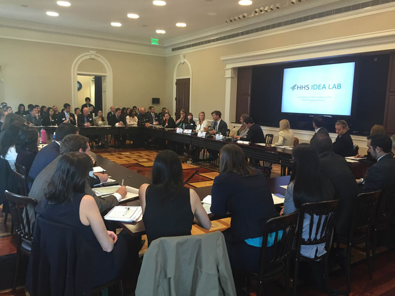
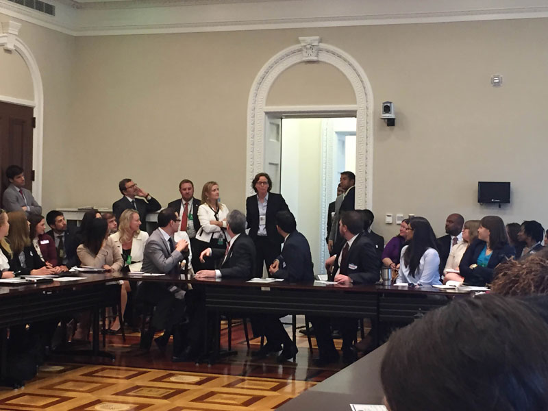

Welcome
One of the Federal government’s greatest assets is the talented cadre of individuals who join its
ranks each year as part of a variety of Federal fellowship programs. Participants in these
programs bring enthusiasm, new ideas, and fresh perspectives to Federal departments and
agencies every day.
These fellows are collectively known as the Fellows in Innovation.
2016 Events
This year, we are building on the momentum of the emerging Fellows in Innovation network.
Through a series of events, networking opportunities, and shared
projects, fellows will have an opportunity to contribute to priority initiatives and pitch their
innovative ideas, while building skills and connecting with new partners across the Federal
government.
Kickoff Event at HHS — February 29
Fellows will have the opportunity
to learn about key innovation practices in the Innovation Toolkit and to develop
collaborations with expert innovation tool practitioners.
This half-day event
will feature speakers from the White House and Federal agencies, project spotlights by previous
and current fellows, and networking opportunities.
Workshop at GSA — April 1
This event will help fellows connect with one another, equip them with
key skills to develop and pitch their best ideas, and to help them create new, high-impact
opportunities for collaborative projects between fellows.
Closing Event at the White House — August 29
This year we built on the momentum of the emerging Fellows in Innovation network through a series of events and collaborative projects. This final event will celebrate the work of the Fellows in Innovation and feature interactive roundtable discussions focused on how fellows can be effective innovators in the Federal government while continuing to build on these efforts next year.
To attend this workshop, please RSVP by Monday, August 1, 2016 at 5:00 PM ET by submitting your security information at the link provided in the invitation email.
Please note that participation is limited to current fellows serving in fellowship programs within the Executive Branch. This is an in-person only event. This invitation is non-transferable. Space is limited and attendees will receive confirmation prior to the event.
Additional logistical information will be provided in advance of this event.
This meeting is off-the-record and not for press purposes.
2015 Event
Last year, the White House Office of Science and Technology Policy
(OSTP) convened a workshop of 100 Federal fellowship program participants to discuss how to
apply creative 21st century tools to their fellowship projects, and to use these tools to inspire and
ignite innovation in government.
The event was the catalyst for the creation of a new, grassroots innovation community: Fellows
in Innovation. Over the last year this community has grown to include over 400 people from a
wide variety of fellowship programs including the Presidential Innovation Fellowship,
Presidential Management Fellowship (PMF), PMF STEM, American Association for the
Advancement of Science Fellowship, Oak Ridge Institute for Science and Education Fellowship,
and many more.


Email List
Stay up to date with the latest events and announcements by joining the Fellows in Innovation email list.
Subscription instructions: To self-subscribe, create a new Email message to listserv@listserv.gsa.gov with any subject and the following in the message body: SUBscribe fellows-in-innovation FirstName LastName. Listserv will take the email address from the message itself, and subscribe the person with their FirstName and LastName connected to their email address.
Fellowships
| Fellowship |
Duration |
Requirements |
| American Association for the Advancement of Science (AAAS) Science & Technology Policy Fellow (S&TPF) |
12 months, with a possible one-year extension for some programs. |
Terminal degree (e.g. PhD, ScD, DVM, MD, etc.) or engineering MS and 3 years experience prior to application |
| ASPPH/EPA Environmental Health Fellowship Program |
12 months, with a possible one-year extension. |
Must have received their masters or doctorate degrees from an ASPPH-member school or program of public health within the last five years and be a U.S. Citizen or permanent resident (Green Card). Preference will be given to candidates with a Certified in Public Health (CPH). |
| ASPPH Public Health Philanthropy Fellowship Program |
12 months, with a possible one-year extension. |
Must have received their masters or doctorate degrees from an ASPPH-member school or program of public health within the last five years and be a U.S. Citizen or permanent resident (Green Card). Preference will be given to candidates with a Certified in Public Health (CPH) and with a background in epidemiology and/or health policy. |
| ASPPH/NHTSA Public Health Fellowship Program |
12 months |
Must have received an MPH or Doctorate degree prior to the beginning of the fellowship (no later than August of the application year). Early career professionals with Masters or Doctorate degrees (within 5 years of graduation) may also apply for the fellowship program. Applicants must have received their degree(s) from a CEPH-accredited ASPPH-member school or program of public health, as well as be a U.S. citizen or hold a visa permitting permanent residence in the U.S., to be eligible for the fellowship program. Certified in Public Health (CPH) preferred. |
| Consumer Financial Protection Bureau (CFPB) Technology and Innovation Fellowship |
24 months |
We're looking for back-end and front-end web developers, UX designers, graphic designers, cybersecurity engineers and tool developers, and data architects and analysts. You must be a US Citizen to be considered. |
| National Security Fellows Program (NSFP) |
12 months |
"U.S. Citizens
Based in Washington, D.C.
Between the ages of 28-40
A minimum of five years of employment in national security or foreign policy" |
| DOE Scholars |
10 weeks |
A participant must be a U.S. citizen, at least 16 years of age (no exceptions), and an undergraduate student, graduate student, or a post-graduate. |
| Knauss Marine Policy Fellows |
12 months |
An eligible applicant is any student, regardless of citizenship, who is enrolled towards a degree in a graduate or professional program. |
| Health Policy Fellowship Robert Wood Johnson Fellows |
12 months |
Exceptional midcareer professionals from academic faculties, government and nonprofit health care organizations with an advanced degree in a health-related field. Applicants with advocacy jobs are not eligible. Elgibility limited to US citizens and permanent residents. |
| NIH Management |
24 months |
For GS-7 up to GS-12 or equivalent NIH employee |
| ORISE |
Varies |
Undergraduate, Graduate Student, Recent Graduate, Postdocs, Faculty, K-12 Students and Teachers, and Research Team opportunities available |
| Presidential Innovation Fellows (PIF) |
12 months |
Any individual who is not a Federal employee or GSA contractor and who is legally authorized to work in the U.S. is eligible to apply. |
| Presidential Management Fellows (PMF) |
24 months |
If you will meet all advanced degree requirements, you are eligible to apply. Eligibility is based on completion of degree requirements by August 31st of the following year of the annual application. Advanced Degree means a professional or graduate degree (e.g., master's, Ph.D., J.D.). |
| Presidential Management Fellows (PMF) in STEM |
24 months |
Those interested in applying for the PMF STEM track must meet, or have met within the previous two years of the opening date of the application announcement, all advanced degree requirements for one of the approved STEM degrees. Advanced Degree means a professional or graduate degree (e.g., master's, Ph.D., J.D.). |
| White House Fellows |
12 months |
Applicants must be U.S. citizens. Applicants must have completed their undergraduate education and be working in their chosen professions. Individuals currently employed by the Federal government are not eligible to apply with the exception of career military personnel. |
| White House Leadership Development Fellows |
12 months |
This program is restricted to career GS-15 and equivalent employees. Agencies may nominate 2 to 4 candidates to the WHLDP. Agency nominees will be considered for inclusion in the program (not guaranteed). All candidates are expected to be high-performing employees (with annual ratings of exceeds expectations, or the equivalent, or higher) with demonstrated commitment to public service. |
| ASBMB Science Policy Fellowship Program |
12-18 months |
Applicant is not beyond postdoctoral stage and must have received doctorate degree within five years of application, U.S. permanent citizenship |
| Genetics and Public Policy Fellowship |
16 months |
Candidates are expected to have an advanced degree in human genetics or related field. Exceptional applicants with other advanced degrees and clearly demonstrated experience-based knowledge in science policy could be considered. Ideally, candidates will have completed graduate training, but be early in the career development path. |
| Science & Technology Policy Institute (STPI) Policy Fellowship Program |
24 months |
Ideal candidates will have at least a BS/BA degree conferred between May 2014 and July 2016 in one of a range of disciplines, including engineering, life sciences, physical sciences, social and behavioral sciences, computer science, mathematical sciences or statistics, and learning sciences. MA/MS-degree candidates and recipients are also encouraged to apply, provided their bachelor’s degrees are within the May 2014–July 2016 timeframe. |